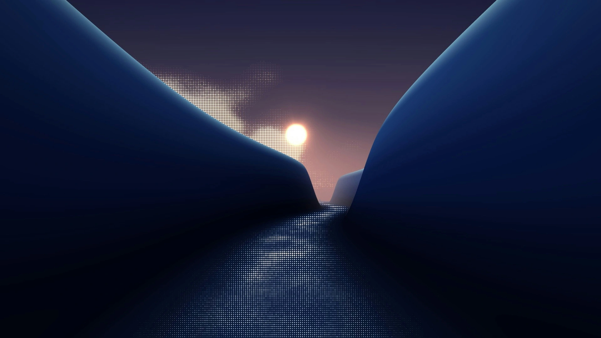
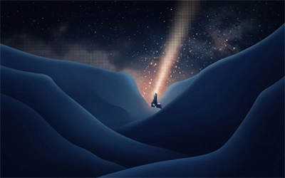
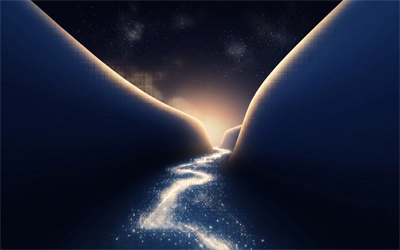
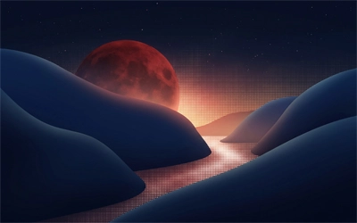

Inicio
Galería
Vídeo
Audio
Contacto
Nébula
Arte conceptual y paisajes de ciencia ficción.

Fotografía original por John Links en Unsplash (Licencia libre de uso comercial).
Galería de Trabajos

Faro Galáctico. Arte conceptual propio.

Ruta de Energía. Arte conceptual propio.

Luna de Sangre. Arte conceptual propio.
Vídeo de Presentación
Vídeo espacial de Pexels (Libre uso comercial). Miniatura fija extraída con FFmpeg.
Audio Ambiental
Pista ambiental editada en FL Studio.
Contacto